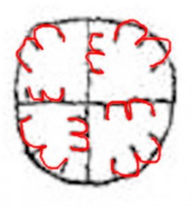
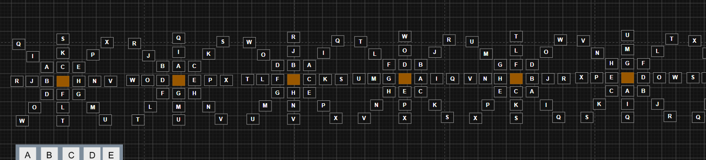

The snowflake key
My starting idea — a polar key that turns as you write — and what the data said about it.
My starting point: 24 glyphs are eight directions times three sizes. Draw that and you get a snowflake — eight arms, three rings — or a compass card. If the key turned while Elgar wrote, every glyph would be enciphered with the key in a different position, and a plain substitution solver would never see through it. That hunch is where everything on this site began.
Where the idea came from

Elgar's own 1920s notebook draws the alphabet on exactly this kind of clock face, and the glyphs behave as polar coordinates: radius 1–3 for the number of arcs, angle in steps of π/4 for the direction. The snowflake grid and Elgar's diagram are the same object. That turned a hunch into a model.
Version 1 — snowflake.html
The first thing I built was a single page: a 7 × 7 table with the 24 cells of the snowflake around an orange hub, an A–X fill (no J, no Q), and two buttons — turn forward and turn backward. Encipher and decipher both turn the whole snowflake one arm (45°) after every letter, forward by default or backward with a checkbox.
snowflake.html: the outer
ring carries A B C at the top, D E F at the bottom and U … Z across the middle
row; each cell is tagged with its glyph name. A 45° turn moves every letter one arm round its ring — and
never off it.
Open the original snowflake.html → (archived as it was, unstyled)
First tries, by hand
With the transcription in the same draw.io diagram, I deciphered the note under the turning key — one arm per glyph, starting again at the top of each line — once turning forward and once backward:
YDIA WGXF RHCL TWID GVYF ZMRP IOXB M (29) OVWI SDNV ZYKL GGWO OVCL HMCO TOPO RUC (31) MUYK FVRI BTDH MGYO ATBF OZVF SPB (27)
YAKD WIWC RYDY TOKF GHVC ZKPN IXWU M (29) OHXG SATL ZLIY GIXW OHDY HKDW TXRW RBD (31) MBVM FHPG BRCV MIVW AREC OEYC STE (27)
Both are gibberish. Checked against the engine written later: with the primary reading, the snowflake fill, schedule every symbol, step 1, direction ±1 and the key restarted per line, it reproduces both blocks letter for letter. So the hand work was right; the idea behind it was what failed — and the orientation test below shows why no regular turn could ever have worked.
I also enciphered a test message by hand in the diagram — YOU HAVE SOLVED THE CIPHER — to try the method on known plaintext. The same phrase is still the default in my encipher tool, which has a one-click round-trip check.
The polar key
The same 24 cells, shown twice: as Elgar's clock face (radius = arc count, angle = direction) and as the snowflake grid. They are one object.
Rotating the dial moves a letter around its ring but never changes its ring. That single fact is what later rules out a regular rotating key — see [07].
What that buys you — a symmetry group
Once the key is a polar diagram, the natural cipher operations are its symmetries — not arbitrary shuffles. There are exactly four generators:
Rotate (k)
θ → θ + k — turn the whole key. This was
the original idea. Preserves the ring, always.
Reflect (a)
θ → a − θ — mirror across an axis.
Dorabella has 10 consecutive 180°-mirrored pairs where chance gives about 5.
Ring shift / permute
r → σ(r) — the only operation that
changes the arc count. Rotation alone can never do this.
Schedule
When the key moves: every symbol, every n, per line, or irregularly — on a repeat, an arc change, a mirrored pair.
Rotation and reflection generate the dihedral group D8 (16 elements); with the six ring permutations that is D8 × S3 = 96 key positions. Every one of them is a position-independent relabelling — except when applied on a schedule. A scheduled operation is what makes this a real cipher rather than a renaming.
The pruning rule that makes it searchable
A substitution solver absorbs any fixed relabelling of the 24 symbols. So a different grid fill, a once-off rotation, “orientation is the letter and arcs are a modifier”, renumbering the arms — all of these are already covered and need no separate test. Only two things change what a solver actually sees:
- scheduled key motion (position-dependent), and
- reading order (which glyph was enciphered first).
That is the entire search space, and it is small enough to sweep exhaustively. The schedules and reading orders my engine implements:
| advance the key… | note |
|---|---|
| never | The key never moves. A plain substitution. |
| every symbol | A progressive key, period 8. |
| every 2 / 3 / 5 | On every second, third or fifth symbol. |
| once per line | Only at a line break — three key states in total. |
| every 5 (word-ish) | A stand-in for word boundaries, which Dorabella does not mark. |
| on a repeat | When a symbol equals the one before it. Irregular. |
| on an arc change | When the number of arcs changes. Irregular, driven by the text. |
| on a mirrored pair | When two consecutive same-ring symbols face opposite ways — Dorabella has 10 of these. |
| reading order | how the glyphs come off the page |
|---|---|
| as written | left to right, top to bottom |
| reversed | the whole note back to front |
| each line reversed | right to left, lines in order |
| boustrophedon | alternate lines reversed |
| lines 3, 2, 1 | bottom line first |
| columns | the three lines interleaved, column by column |
| spiral | line 1 forwards, line 3 backwards, line 2 forwards |
What the data said about the snowflake
A regular rotating key is ruled out dead
A 45° turn preserves the ring, so a per-symbol rotation forces the eight direction counts towards 87/8
≈ 10.9 whatever the key or fill. Dorabella is 10 8 9 16 15 3 4 22 — χ² =
26.6 on 7 degrees of freedom. Monte Carlo over 40,000 simulated rotating ciphertexts: p = 0.0003. It also leaves
four symbols unused where rotation predicts 0.8. This test needs no key, no solver and no corpus, so nothing later
overturns it. My own first idea, killed by one number.
Irregular schedules survive open
The χ² argument only bites when the key advances on a regular clock. Advance it on a repeated symbol, an arc-count change or a mirrored pair, and the orientation counts are no longer forced flat. Those schedules are in every one of my tools and in the server hunt; none has produced a reading, but they are not excluded.
A real structural oddity lives in rotation space open
Consecutive same-ring symbols facing exactly opposite ways occur 10 times; shuffling gives 5.2 on average
(p = 0.03). By angle, consecutive same-ring pairs are strongly peaked at 180° —
0°:4 45°:0 90°:3 135°:4 180°:10 225°:2 270°:1 315°:2. That is a
rotation-space signal, and the polar model is the natural language for it. No model I simulated reproduces
it ([10]).
Working the disc properly
Turning the whole disc by a fixed amount is one way to use it. Someone holding a three-ring disc has three more that are just as easy — and crucially none of them is absorbed by the substitution solver, because each changes the relationship between symbols position by position. I added all three to the server hunt:
| family | what it is | why it is plausible in 1897 |
|---|---|---|
| ringspin | The three rings turn at different rates — one notch inner, three outer | What concentric rings are for; Alberti's disc had two and they moved independently |
| keyspin | The amount of turn cycles through a keyword written as numbers | A Vigenère on the disc — the most likely thing a literate amateur would do |
| autokey | The turn is dictated by the symbol just decoded | Self-keying: no written key to lose or be found, and trivial by hand |
Adding a family is easy; the only thing that matters is whether a message hidden that way comes back out.
lab/snowflake_test.py plants a message through the real encipher path for each and asks the search to find
it:
ringspin order=cols sched=line ringstep=0/3/5 recovered 100.0% of letters
keyspin order=l321 keyspin=455 recovered 100.0% of letters
autokey order=ident autokey=arcs mirror=se recovered 100.0% of letters
3 of 3 new mechanics solve a planted message.The classical cousin — the turning grille
A square card with a quarter of its cells cut out: write through the holes, turn the card 90°, write again, four times in all. It is the closest classical cipher to the snowflake idea — the secret is a rotation, not a substitution. Fleissner grilles were in print from 1881 and well known in Europe in the 1880s and 1890s, a parlour favourite. The grille is in my transposition bench and in the server hunt as its own family.